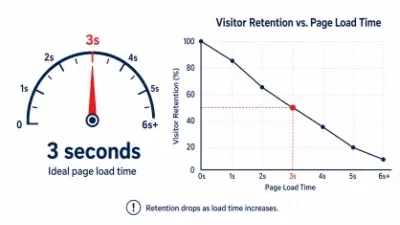
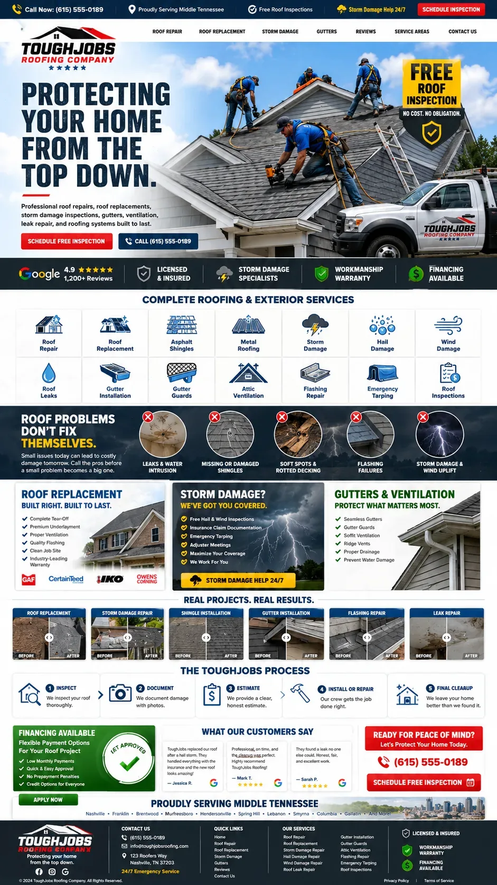

Every trade business owner has heard the traffic number brag: "we got 4,000 visitors last month." Traffic isn't the scoreboard. If those 4,000 people land on your home page and leave in under ten seconds, you didn't get leads — you got bounce traffic. Here are the five most common reasons a home page fails to convert, and what to do about each one.

- Image Prompt for AI Generator
- Split-screen flat-design illustration, left half shows a chaotic desktop website mockup with five competing pop-ups, a busy stock-photo hero, and no visible button; right half shows a clean, high-contrast website mockup with one bold red call-to-action button, generous white space, and a phone number in the header. Studio-flat lighting, muted navy and off-white palette with one red accent color, vector illustration style, 16:9 composition.
- Recommended Size
- 1520 × 855px (16:9), export as WebP under 200KB — displays at 760px wide in-article
- SEO File Name
home-page-conversion-before-after-comparison.webp- SEO Alt Text
- Before and after comparison showing how to stop bounce traffic with a clearer home page layout
1. Your Call-to-Action Is a Guessing Game
Visitors decide whether to stay or leave in the first few seconds. If a stranger has to scroll or think about what you want them to do next, you've already lost them. The fix isn't cleverness — it's clarity. One primary action, stated in plain language, visible without scrolling: "Request a Quote," "Call Now," "Start Assessment." Every home page reviewed in our website teardown process that struggled with conversion had the same root issue: three or four competing buttons, none of them obviously the right one to click.
What good looks like
- One dominant CTA button in a color found nowhere else on the page
- The CTA repeated at the bottom of the page, not just the top
- Copy on the button that names the outcome ("Get My Free Quote"), not the mechanism ("Submit")
2. Load Time Is Quietly Killing Your Content Conversion
A three-second delay is enough for over a third of visitors to bounce before your headline even renders. For a trade business running paid ads to that home page, this isn't a technical detail — it's money paid to Google to load a page nobody sees. Oversized hero images, autoplay video, and un-optimized fonts are the usual culprits. If you don't know your load time, that's the first thing to check before touching a single word of copy.

- Image Prompt for AI Generator
- Minimalist infographic of a speedometer/gauge dial in navy and red, needle pointing toward a "3 seconds" mark, with a downward-sloping line graph beside it representing visitor retention dropping as load time increases. Clean vector style, plenty of white space, single red accent, no photographic elements.
- Recommended Size
- 1520 × 855px (16:9), export as WebP under 200KB — displays at 760px wide in-article
- SEO File Name
website-load-time-visitor-bounce-rate-chart.webp- SEO Alt Text
- Chart showing how slow page load time increases bounce rate and hurts content conversion
3. You're Talking About Yourself, Not the Homeowner's Problem
"Family owned since 1998" and "Fully licensed and insured" are trust signals, not headlines. They belong lower on the page. The first thing a visitor should read is their own problem reflected back at them — the leaking pipe, the dead furnace, the roof that's already failed one inspection — followed immediately by proof you're the one who fixes it fast. A home page that opens with the business's history instead of the visitor's urgency reads like a brochure, not a service built for user experience.
A simple reframe
Instead of "20 Years of Excellence in Plumbing," try "Emergency Plumbing, On-Site Today." One is about you. The other is about them — and it's the one that gets the call.
4. Your Service Area and Availability Are Buried
Homeowners searching for a trade business are usually deciding between three or four open tabs. If they can't tell in five seconds whether you serve their town and whether you're available now, they close the tab and try the next one. This is a user-experience failure as much as a copy failure — service area and hours need to live near the top of the page, not in the footer.
- State your primary service cities in the hero or the section directly below it
- Show real-time availability language: "Same-Day Service," "Answering Calls Now"
- Link out to a dedicated service area page for visitors who want the full coverage map
5. Mobile Visitors Are Getting a Worse Experience Than Desktop Visitors
The majority of trade-service searches happen on a phone, often from a driveway or a job site. If your CTA button requires a precise tap, your phone number isn't a tap-to-call link, or your hero text is unreadable without zooming, you are actively losing the highest-intent visitors you have. Every element engineered for content conversion on desktop needs a mobile-first equivalent — tap targets sized for a thumb, not a cursor.

- Image Prompt for AI Generator
- Photorealistic mockup of a smartphone held in one hand against a soft blurred job-site background, screen displaying a clean trade-business website with a large red "Call Now" button and bold headline, natural daylight, shallow depth of field, product-photography style.
- Recommended Size
- 1520 × 855px (16:9), export as WebP under 200KB — displays at 760px wide in-article
- SEO File Name
mobile-optimized-home-page-tap-to-call-button.webp- SEO Alt Text
- Mobile home page design with large tap-to-call button improving user experience for trade businesses
Fixing These Five Things Is the Fastest Way to Stop Bounce Traffic
None of these fixes require a full rebuild. A clear CTA, a faster load, homeowner-first copy, visible service area, and a mobile-first layout can each be tackled independently — and together they compound. If your website is bringing in visitors but not calls, this is the order we'd audit it in, starting with load time and CTA clarity before touching a word of copy.